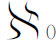
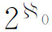

8．一些新近的发展
对基础的根本问题所提出的解答——集合论的公理化、逻辑主义、直观主义或形式主义——都没有达到目的，没有对数学提供一个可以普遍接受的途径。在哥德尔1931年的工作以后的发展，也没有在实质上改变这种状况。可是，有些动态和结果是值得一提的。有些人对数学建立了妥协的途径，兼备两个根本学派的特色。另一些人，特别是根岑（Gerhard Gentzen，1909—1945），希尔伯特学派的一员，放松了希尔伯特元数学中对证明方法的限制，例如，设法用超限归纳（对超限数进行归纳）去确立数论和分析的一些受到限制的部分的相容性(26)。
在其他有意义的结果中，有两个特别值得提到。在《选择公理和广义连续统假设二者与集合论公理的相容性》（The Consistency of the Axiom of Choice and of the Generalized Continuum Hypothesis with the Axioms of Set Theory，1940，修订版，1951）中，哥德尔证明了如果策梅洛-弗伦克尔公理系统在除去选择公理后是相容的，那么加上这条公理以后这个系统也是相容的；这就是说，这条公理是不能反证的。同样，连续统假设（它说的是没有基数存在于

与
之间）与策梅洛-弗伦克尔系统（除去选择公理）合在一起也是相容的。1963年，斯坦福大学的数学教授科恩（Paul J．Cohen，1934—2007）证明了(27)所说的这两条公理对于策梅洛-弗伦克尔系统是独立的；就是说，它们是不能以这个系统为基础去证明的。还有，即使把选择公理保留在策梅洛-弗伦克尔系统中，连续统假设也还是不能证明的。这些结果意味着，我们可以随意去构造数学的新系统，在其中这两条有争议的公理有一个或者两个全都被否定了。1930年以后的全部发展还留下来两个没有解决的大问题：去证明不加限制的经典分析与集合论的相容性，以及在严格直观的根基上去建立数学，或者去确定这种途径的限度。在这两个问题中，困难的根源都在于无穷集合和无限程序中所用到的无限（infinity）。这个概念，即使对于希腊人也已经在无理数上造成了问题，而且他们在穷竭法中躲开它。从那以后，无限这个概念一直是争论的题目，并使外尔说道，数学是无限的科学。
关于数学的适当逻辑基础的问题，特别是直观主义的兴起，在某种较广的意义上，显示出数学走了一个圆圈。这门学科是在直观的和经验的基础上起始的。严密性在希腊时代就变成了一个目标，虽说直到19世纪以前在受到冲击时仍更加受到尊重，它似乎就要达到了。但是，过分追求严密性，将引入绝境而失去它的真正意义。数学仍然是活跃而富有生命力的，但是它只能建立在实用的基础上。
有些人看到了从当前的绝境中解脱出来的希望。以布尔巴基（Nicolas Bourbaki）为笔名的一群法国数学家，提出了这种令人鼓舞的看法(28)：“经过了25个世纪，数学家们已经有了改正错误的锻炼，从而看到他们的科学是更加丰富了，而不是更贫困了；这就使他们有权去安详地展望未来。”
不管乐观主义有没有根据，外尔对数学的现状作了恰当的描述(29)：“关于数学最终基础和最终意义的问题还是没有解决；我们不知道向哪里去找它的最后解答，或者根本就不能期望会有一个最后的客观回答。‘数学化’（Mathematizing）很可能是人的一种创造性活动，像语言或音乐一样，具有原始的独创性，它的历史性决定不容许完全的客观的有理化（rationalization）。”
参考书目
Becker，Oskar：Grundlagen der Mathematik in geschichtlicher Entwicklung，Verlag Karl Alber，1956，317-401．
Beth，E．W．：Mathematical Thought：An Introduction to the Philosophy of Mathematics，Gordon and Breach，1965．
Bochenski，I．M．：A History of Formal Logic，University of Notre Dame Press，1962；Chelsea（reprint），1970．
Boole，George：An Investigation of the Laws of Thought（1854），Dover（reprint），1951．
Boole，George：The Mathematical Analysis of Logic（1847），Basil Blackwell（reprint），1948．
Boole，George：Collected Logical Works，Open Court，1952．
Bourbaki，N．：Eléments d'histoire des mathématiques，2nd ed．，Hermann，1969，11-64．
Brouwer，L．E．J．：“Intuitionism and Formalism，”Amer．Math．Soc．Bull．，20，1913/1914，81-96．这是布劳威尔接受阿姆斯特丹数学教授职位的就职演说的英译文。
Church，Alonzo：“The Richard Paradox，”Amer．Math．Monthly，41，1934，356-361．
Cohen，Paul J．，and Reuben Hersh：“Non-Cantorian Set Theory，”Scientific American，Dec．1967，104-116．
Couturat，L．：La Logique de Leibniz d'après des documents inédits，Alcan，1901．
De Morgan，Augustus：On the Syllogism and Other Logical Writings，Yale University Press，1966．这是由希恩（Peter Heath）编辑的德摩根的论文集。
Dresden，Arnold：“Brouwer's Contribution to the Foundations of Mathematics，”Amer．Math．Soc．Bull．，30，1924，31-40．
Enriques，Federigo：The Historic Development of Logic，Henry Holt，1929．
Fraenkel，A．A．：“The Recent Controversies About the Foundations of Mathematics，”Scripta Mathematica，13，1947，17-36．
Fraenkel，A．A．，and Y．Bar-Hillel：Foundations of Set Theory，North-Holland，1958．
Frege，Gottlob：The Foundations of Arithmetic，Blackwell，1953，英文和德文；也有只是英译的，Harper and Bros．，1960。
Frege，Gottlob：The Basic Laws of Arithmetic，University of California Press，1965．
Gerhardt，C．I．，ed．：Die philosophischen Schriften von G．W．Leibniz，1875-1880，Vol．7．
Gödel，Kurt：On Formally Undecidable Propositions of Principia Mathematica and Related Systems，Basic Books，1965．
Gödel，Kurt：“What Is Cantor's Continuum Problem？”，Amer．Math．Monthly，54，1947，515-525．
Gödel，Kurt：The Consistency of the Axiom of Choice and of the Generalized Continuum Hypothesis with the Axioms of Set Theory，Princeton University Press，1940；rev．ed．，1951．
Kneale，William and Martha：The Development of Logic，Oxford University Press，1962．
Kneebone，G．T．：Mathematical Logic and the Foundations of Mathematics，D．Van Nostrand，1963．特别参看关于1939年以来的发展的附录。
Leibniz，G．W．：Logical Papers，由帕金森（G．A．R．Parkinson）编辑和翻译，Oxford University Press，1966。
Lewis，C．I．：A Survey of Symbolic Logic，Dover（reprint），1960，pp．1-117．
Meschkowski，Herbert：Probleme des Unendlichen，Werk und Leben Georg Cantors，F．Vieweg und Sohn，1967．
Mostowski，Andrzej：Thirty Years of Foundational Studies，Barnes and Noble，1966．
Nagel，E．，and J．R．Newman：Gödel's Proof，New York University Press，1958．
Poincaré，Henri：The Foundations of Science，Science Press，1946，448-485．这是三本书Science and Hypothesis，The Value of Science，和Science and Method的合订本的重印本。
Rosser，J．Barkley：“An Informal Exposition of Proofs of Gödel's Theorems and Church's Theorem，”Journal of Symbolic Logic，4，1939，53-60．
Russell，Bertrand：The Principles of Mathematics，George Allen and Unwin，1903；2nd ed．，1937．
Scholz，Heinrich：Concise History of Logic，Philosophical Library，1961．
Styazhkin，N．I．：History of Mathematical Logic from Leibniz to Peano，Massachusetts Institute of Technology Press，1969．
Van Heijenoort，Jean：From Frege to Gödel，Harvard University Press，1967．这是论数学基础和逻辑的重要论文的翻译。
Weyl，Hermann：“Mathematics and Logic，”Amer．Math．Monthly，53，1946，2-13＝Ges．Abh．，4，268-279．
Weyl，Hermann：Philosophy of Mathematics and Natural Science，Princeton University Press，1949．
Wilder，R．L．：“The Role of the Axiomatic Method，”Amer．Math．Monthly，74，1967，115-127．
————————————————————
(1) Revue Générale des Sciences，16，1905，541．
(2) Proc．Lon．Math．Soc．，（2），4，1906，29-53．
(3) Abhandlungen der Friesschen Schule，2，1908，301-324．
(4) Math．Ann．，46，1895，481-512＝Ges．Abh．，282-356．
(5) Ges．Abh．，443-448．
(6) Math．Ann．，65，1908，261-281．
(7) Math．Ann．，86，1921/1922，230-237，及后来的许多文章。
(8) Jour．für Math．，154，1925，219-240，及以后的文章。
(9) 这些人的看法表现在一次著名的交换信件中。见Bull．Soc．Math．de France，33，1905，261-273。还有波莱尔：Leçons sur la théorie des fonctions，Gauthier-Villars，第4版，1950，150-158。
(10) 1690年出版＝莱布尼茨：Die philosophischen Schriften，C．I．格哈特主编，1875-1890，Vol．4，27-102。
(11) 1690年出版＝莱布尼茨：Die philosophischen Schriften，C．I．格哈特主编，1875-1890，Vol．4，27-102。
(12) Trans．Camb．Phil．Soc．，10，1858，173-230．
(13) Jour．für Math．，101，1887，337-355＝Werke，3，251-274．
(14) Jour．für Math．，92，1882，1-122＝Werke，2，237-387．
(15) Acta Math．，22，1899，17．
(17) Amer．Math．Monthly，53，1946，2-13＝Ges．Abh．，4，268-279．
(18) Proc．Third Internat．Congress of Math．，Heidelberg，1904，174-185＝Grundlagen der Geom．，第7版，247-261；英译文在Monist，15，1905，338-352。
(19) Math．Ann．，95，1926，161-190＝Grundlagen der Geometrie，第7版，262-288。看p．350注(21)。
(20) Weyl，Amer．Math．Soc．Bull．，50，1944，637＝Ges．Abh．，4，157．
(21) Math，Ann．，95，1926，161-190＝Grundlagen der Geometrie，第7版，262-288。英译文见于贝纳塞拉夫（Paul Benacerraf）与普特南（Hilary Putnam）：Philosophy of Mathematics，134-181，Prentice-Hall，1964。
(22) Monatshefte für Mathematik und Physik，38，1931，173-198；看参考书目。
(23) Atti Del Congresso Internazionale Dei Matematici，Ⅰ，135-141＝Grundlagen der Geometrie，第7版，313-323。
(24) Jour．für Math．，154，1925，1．
(25) Abh．Math．Seminar der Hamburger Univ．，1，1922，157-177＝Ges．Abh．，3，157-177．
(26) Math．Ann．，112，1936，493-565．
(27) Proceedings of the National Academy of Sciences，50，1963，1143-1148；51，1964，105-110．
(28) Journal of Symbolic Logic，14，1949，2-8．
(29) Obituary Notices of Fellows of the Royal Soc．，4，1944，547-553＝Ges．Abh．，4，121-129，特别是p．126。